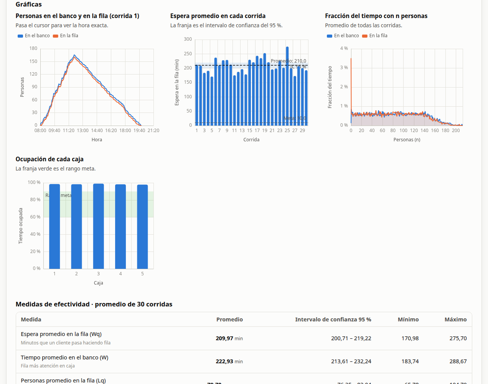
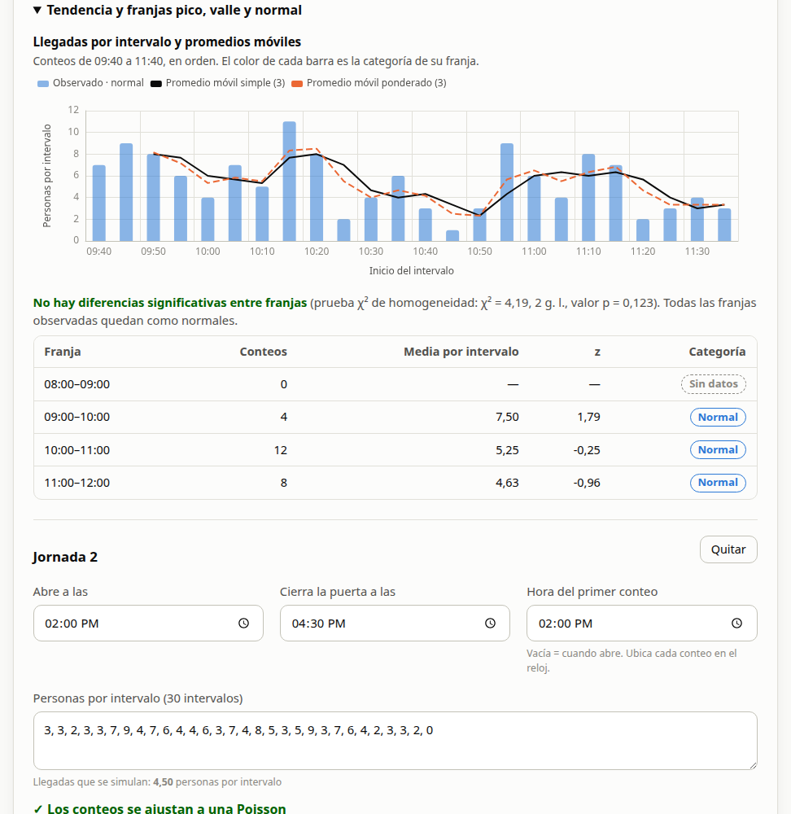
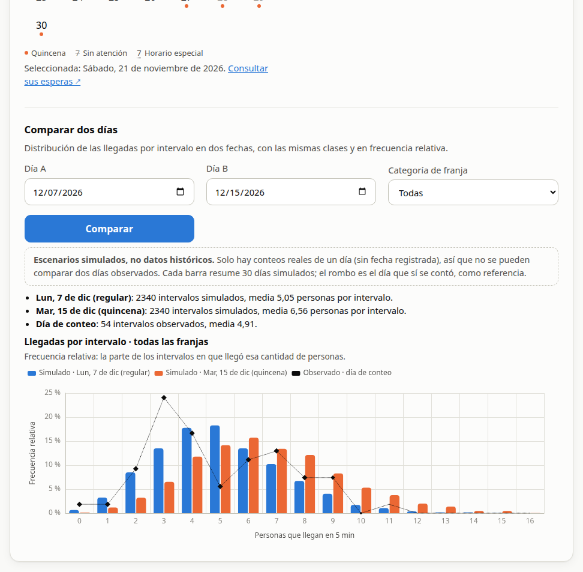
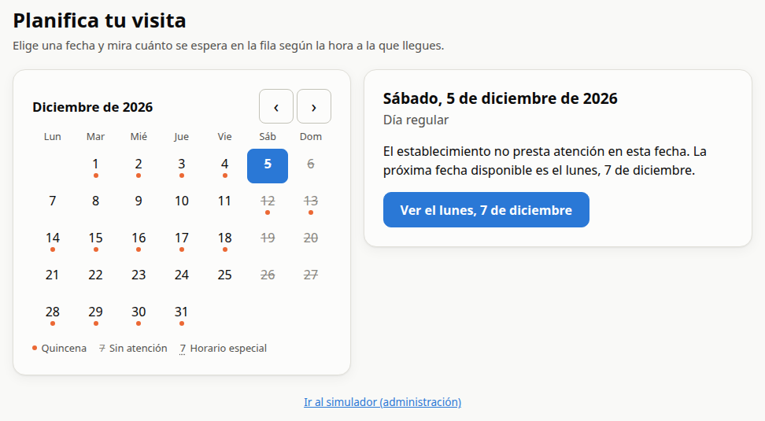

En esta página
Manual · Parte 1 de 3
Cómo usar el simulador
Simula la fila de un banco con una sola fila, varias cajas y clientes prioritarios. Dice cuánto se espera y cuántas cajas hacen falta.
Abrir el simulador
En la carpeta del proyecto, con Docker instalado:
docker compose up --build -d| Qué | Dirección |
|---|---|
| Simulador (administración) | http://localhost:8080 |
| Planifica tu visita (cliente) | http://localhost:8080/#/visita |
| API y su documentación | http://localhost:8000/docs |
Sin Docker: .venv/bin/python simulador2/api.py y abrir http://localhost:8000. Los detalles están en el README.
Simular en 4 pasos
La pestaña Simulación es un asistente. Los valores de fábrica son los del estudio, así que puedes pulsar Siguiente hasta el final y ver un resultado.
Llegadas
- Escribe cuántas personas entraron en cada intervalo de 5 minutos, separadas por comas. Hay un recuadro por jornada (mañana y tarde).
- Debajo aparece al instante la prueba de Poisson (✓ o ✗) y la tendencia: promedios móviles y franjas pico, valle o normal.
- Escenario: día normal o quincena (llega 30 % más gente).

Servicio
- Cajas abiertas (5 por defecto).
- Tiempo de atención: uniforme entre un mínimo y un máximo (1 a 11 min, media de 6) o exponencial con una media (6 min).

Prueba KS y simular
- Corridas (30): cuántos días se simulan.
- α (0,05) y límite de intentos (10) de la prueba Kolmogórov-Smirnov sobre los números aleatorios.
- Semilla: vacía = se toma el reloj. Escribe un número (por ejemplo 12345) para obtener siempre el mismo resultado.
- Validar con Ciw (opcional): repite la simulación con una librería independiente y compara.
Pulsa Simular.

Resultados
- Veredicto por jornada: espera promedio en la fila, ocupación de las cajas y hora en que sale el último cliente, comparados con las metas.
- ¿Cuántas cajas se necesitan…? prueba 1, 2, 3… cajas hasta cumplir la meta de espera.
- Abajo: banco animado en 3D, gráficas, tabla de medidas con intervalo de confianza del 95 %, pruebas y tabla cliente por cliente.
- La semilla usada aparece arriba; Fijar esta semilla la deja escrita para repetir la simulación.

Cómo leer los resultados
| Medida | Qué significa |
|---|---|
| Wq | Minutos que un cliente pasa haciendo fila, antes de que lo llamen a caja. |
| W | Minutos en el banco: fila más atención. |
| Lq · L | Personas promedio en la fila · en el banco. |
| Ocupación | Parte del tiempo que las cajas pasan atendiendo. La meta es de 60 a 90 %. |
| IC 95 % | Rango donde está el promedio del modelo con 95 % de confianza. Más corridas lo hacen más angosto. |


Establecimiento
La pestaña Establecimiento define lo que verá el cliente:
- Días y horarios: jornadas por día de la semana. No se pueden superponer.
- Excepciones: festivos, cierres u horarios especiales de una fecha. Mandan sobre el horario semanal.
- Estimaciones: zona horaria, largo de las franjas (60 min), aumento de quincena (1,3) y modelo de llegadas.
- Guardar y publicar: simula cada horario en día regular y en quincena con los datos de los pasos 1 a 3, y guarda los resultados.
- Comparar dos días: histograma de llegadas simuladas de dos fechas contra el día de conteo del estudio.


Planifica tu visita
Vista para el cliente en /#/visita, sin datos técnicos:
- Elige un día en el calendario. Un punto naranja marca quincena y un número
tachadomarca un día sin atención. - Cada franja horaria muestra la espera estimada en la fila. La franja con menor espera lleva la marca Recomendado.
- Si el banco está cerrado ese día, aparece un botón a la próxima fecha con atención.


Las esperas salen del mismo motor de simulación, publicadas desde Establecimiento. Son estimaciones del modelo, calculadas con 30 días simulados.
Ajustes
El ícono de herramienta (arriba a la derecha del asistente) abre: tema claro u oscuro, tipo y tamaño de letra, estilo de las gráficas, metas (espera máxima y rango de ocupación), qué datos se piden y qué resultados se muestran. Se guardan en el navegador.
Si algo sale mal
| Mensaje | Qué hacer |
|---|---|
| «No hay conexión con la API» | El back no está corriendo. Revisa docker compose ps o inicia simulador2/api.py. |
| Recuadro rojo con un campo (error 422) | Un dato está fuera de rango o falta. El mensaje dice cuál. |
| «La jornada N no recibió ningún cliente…» | Los conteos son casi cero o la jornada es muy corta. Aumenta los conteos o la duración. |
| «…no pasó la prueba KS en N intentos» (409) | La prueba KS rechazó la misma corrida demasiadas veces. Sube el límite de intentos o cambia la semilla. |
| El cliente ve «todavía no hay estimaciones de espera» | Cambió la configuración. Entra a Establecimiento y pulsa Guardar y publicar. |